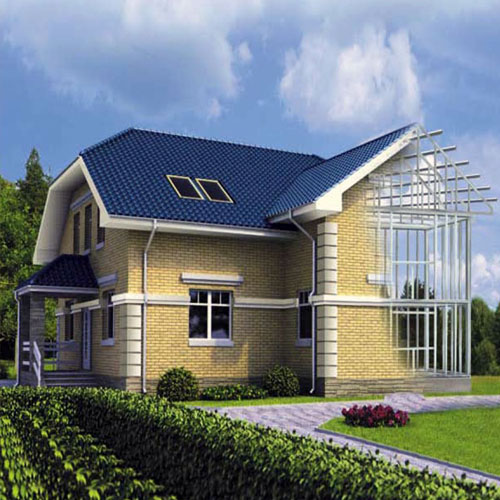

ЛСТК о технологии

Каркасное строительство ЛСТК
Более 20 лет мы строим из ЛСТК в Череповце и других регионах России. Среди реализованных проектов многоквартирные дома, офисные здания, частные коттеджи, торговые и развлекательные центры, складские и производственные помещения.
Технология ЛСТК завоевала уважение у заказчиков благодаря возможности сэкономить средства и завершить строительство в короткие сроки с высоким качеством. К примеру, на строительство многоквартирного дома под ключ требуется всего 3 4 месяца. Коттедж ЛСТК строится 1 1,5 месяца.
Гарантийный срок до 100 лет.
Технология ЛСТК: принцип, материалы, схожие понятия
В основе технологии ЛСТК стальные тонкостенные термопрофили из оцинкованной стали. Возведение зданий из ЛСТК относится к разновидности каркасного строительства. В отличие от построек на деревянном каркасе основа здания металл.
Близкие к ЛСТК понятия это:
- строительство быстровозводимых зданий,
- строительство из термопрофиля,
- строительство из металлокаркаса.
Использование термопрофиля выгодно отличается от применения обычных металлоконструкций: благодаря наличию перфорации путь теплового потока вдоль них увеличивается, что обеспечивает отсутствие мостиков холода.
Термопрофиль используется для создания каркаса здания, кровельной системы, перегородок и перекрытий.
Для внутренней отделки используется обшивка листами гипсокартона.
Фасад может быть облицован сайдингом, профлистом, стеновыми панелям или обложен кирпичом. Также могут быть использованы термопанели, этот материал зарекомендовал себя с лучшей стороны.
Коттедж из ЛСТК в Череповце мы обычно возводим бригадой из 3 - 4 человек. Это существенно снижает затраты на строительство.
Строительство ЛСТК: преимущества быстровозводимых зданий
Одним из главных преимуществ строительства из ЛСТК заказчики называют высокие темпы работ. Время экономится не только на монтаж каркаса здания, но и на подготовительном этапе.
Мы строим из ЛСТК здания на фундаментах мелкого заложения, это увеличивает темпы и снижает затраты. В работе не требуется тяжелая техника, что особенно выгодно при возведении объектов в удаленной местности или в сложных климатических условиях и на неустойчивом грунте.
Вся конструкция отличается высокой точностью, благодаря чему фасадные и кровельные системы монтировать проще, так как для этого не требуются подготовительные работы по выравниванию.
Дизайн интерьера, выполненный на объекте ЛСТК, отличается современностью, легкостью воплощения проекта и ценовыми преимуществами для клиента.
ЛСТК дома (многоквартирные и частные) прекрасно хранят тепло, снижая эксплуатационные затраты, отличаются хорошей вентиляцией. К коттеджам ЛСТК легко сделать пристройку веранды или террасы.
Строительство коммерческих зданий из термопрофиля позволяет получить дешевый в эксплуатации объект любой планировки и большей полезной площади по сравнению с другими технологиями.
Строительство промышленных помещений из ЛСТК позволяет легко организовать производство, а также логистику, склады предприятия.